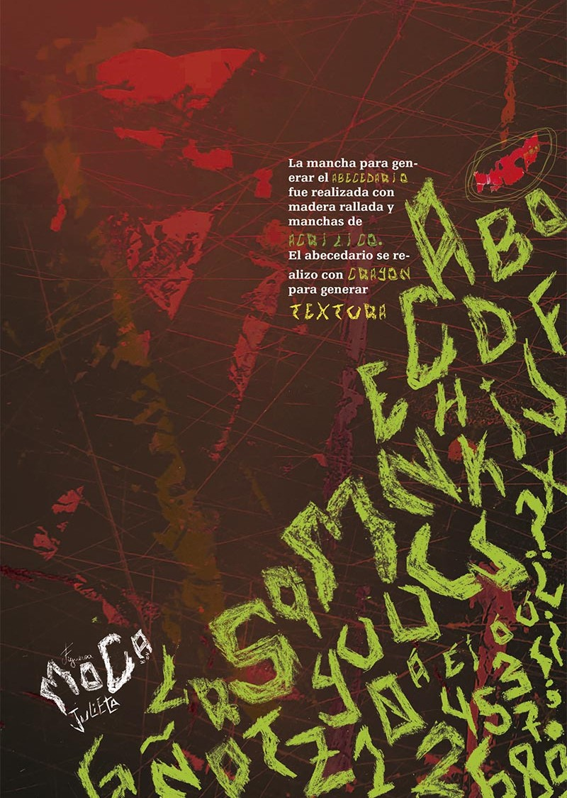

¡Hola! Soy estudiante de Diseño y Comunicación Visual en la Universidad de Lanús. Tengo 28 años y me mantengo siempre en modo creativo. Me encanta el arte, los proyectos, el diseño, el manga, el anime y el pop art en mis ilustraciones. ¡Lo más importante, soy mamá de Kobu y Uma!
Datos personales
- Habilidades: Ilustración, Diseño gráfico
- Idiomas: Español, Japonés básico
- Intereses: Manga, Cultura japonesa, Tipografía
- Disponibilidad: Media jornada

Mis trabajos
